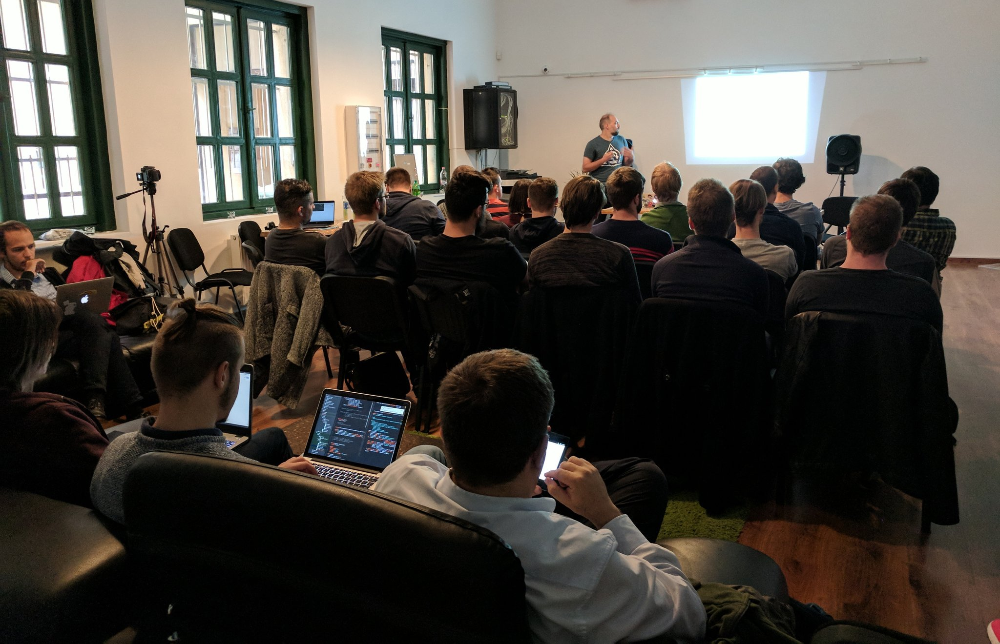
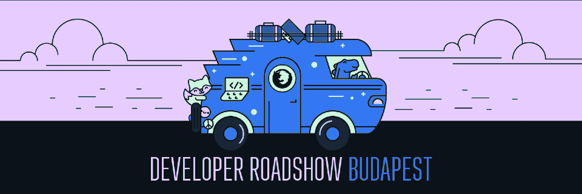
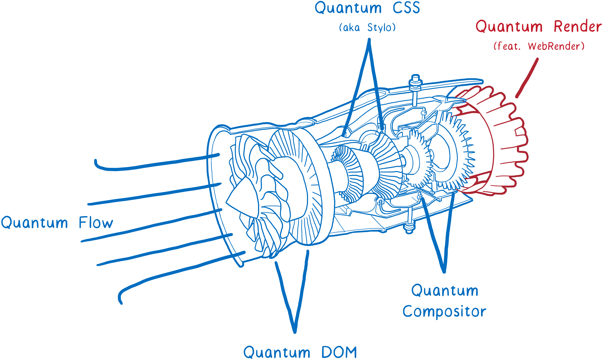

Mozilla Developer Roadshow-val folytatódik a magyar Rust meetup-sorozat
Szeptemberben indult útjára a Rust Hungary meetup amely a Rust programozási nyelv magyar közösségét hivatott megszólítani. Az első meetup kiválóan sikerült, az előadók és előadások pozitív fogadtatása után máris nyilvánvaló volt, hogy nem kell majd sokat várni a folytatásra.
 Indul az első Rust Hungary meetup!
Ez így is lett, hiszen egy kiadós és pihentető hosszú hétvégét követően jövő héten kedden (Október 24.) máris érkezik a második felvonás a Mozilla Developer Roadshow-val karöltve!

A Mozilla Developer Roadshow a Mozilla egész éves eseménysorozata amelynek keretében Mozilla fejlesztők és a nyílt web más támogatói látogatnak el különböző városokba világszerte hogy ott modern webes technológiákról adjanak elő és beszélgessenek a helyi fejlesztőközösség tagjaival.
Mindez a Budapesti esemény tekintetében sem lesz másként, vendégünk lesz többek között Nicolas Silva aki a Mozilla párizsi központjában a Firefox grafikus alrendszerének fejlesztésén dolgozik és a novemberben érkező Firefox Quantumról fog előadni. Ezen túl a (szintén jövő héten megrendezésre kerülő) JSConf Budapest webes fejlesztői konferenciáról is érkeznek vendégelőadóink, sőt, visszatér a Szegedi Egyetem csapata is hogy a legújabb kutatásukról számoljanak be.

A programról további részleteket az esemény meetup oldalán találtok, s jelentkezni szintén itt tudtok, kedvcsinálóként azonban az egyik témánkat itt is kiemelnénk:
A Szegedi Egyetem csapata az utóbbi hónapokban egy igencsak jövőbe mutató technológián dolgozik, a Servo "WebRender" grafikus megjelenítőmotoron, amely a Firefox Quantum Render modulját fogja adni a jövőben. Nicolas Silva maga is ezen a technológián dolgozik (ő a párizsi kontingens vezető fejlesztője a Mozillánál), és anélkül hogy a részletekbe belemennénk, bátran állíthatjuk hogy a webfejlesztés világát egészen fundamentális módon fogja befolyásolni az a teljesítménynövekedés amellyel a WebRender technológia kecsegtet.
 Miből lesz a "böngészőmotor"?
Ha többet szeretnétek megtudni erről (és nem szeretnétek a délutánt Lin Clark a WebRenderről szóló, elképesztően részletes írásával tölteni akkor gyertek el kedden a meetupra!
Azt, hogy nem árulunk zsákbamacskát, azt Jake Archibald, a Google Chrome böngésző(!) egyik vezető evangelistájának tweetjével szeretnénk illusztrálni, aki még 2016-ban csak ennyit nyilatkozott az (akkor még csak kísérleti jelleggel fejlesztett) WebRender-t használó Servo böngészőmotorról: